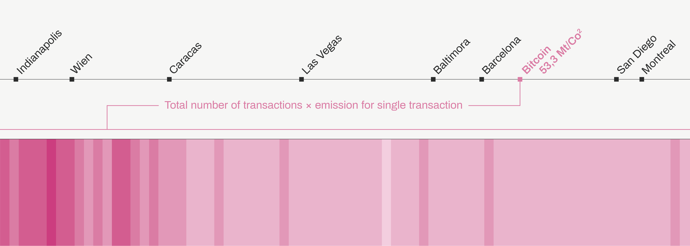

/ BITCOIN TRANSACTIONSAND CARBON FOOTPRINTS
- In order to work perfectly, at every transaction the system gathers all the nodes of the network and produces a shocking amount of CO2.
- The most dangerous menace for the “real world” is the energy consumption per transaction. In fact, one transaction requires 10 minutes to be completed, creates an average of 236kg of CO2 and is actually equivalent to 740,678 VISA transactions.
- Assuming that more or less 300.000 BTC transaction are verified everyday, is impossible not to notice that the global impact of this powerful democratic mechanism is extremely high.

Bitcoin’s transactions and CO2 emissions